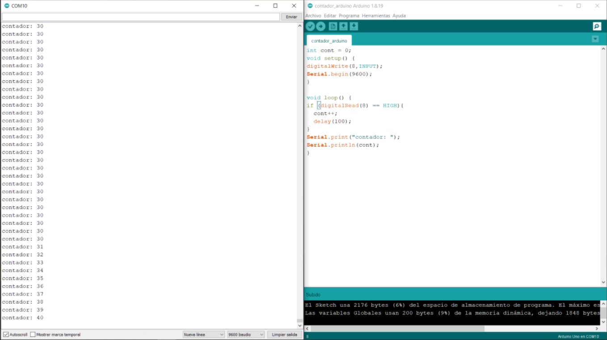

Objetivo General:
Conocer, identificar y comprobar el funcionamiento al desarrollar un protocolo de comunicación, en esta primera parte de un contador de pulsos y un contador de tiempo en un pulso.
Objetivos específicos:
Contador de pulsos
· Utilizando 1 Arduino, diseñar una función que permita enviar un número determinado de pulsos (Variación de 0 a 1) a una frecuencia específica, la función debe tener la siguiente estructura void pulsos(int cantidad, int duración). (Comprobar el correcto funcionamiento utilizando el osciloscopio).
· Utilizando un segundo Arduino, diseñar una función que permita contar el número de pulsos que ha recibido (Variación de 0 a 1) y mostrarlos en el monitor serial.
· Utilizando ambos arduinos, conectar un pin de los Arduinos para comprobar el funcionamiento del sistema enviando un numero de pulsos específicos a la velocidad de 1 pulso por segundo,10, 100 y 1000 pulsos por segundo.
Contador de duración de pulsos
· Utilizando 1 Arduino, diseñar una función que permita enviar un pulso con un tiempo en High determinado (Comprobar el correcto funcionamiento utilizando el osciloscopio).
· Utilizando un segundo Arduino, diseñar una función que permita contar el tiempo de la duración de un pulso que ha recibido del primer Arduino (Variación de 0 a 1) y mostrarlos en el monitor serial.
Material:
- 2 Arduino
- Protoboard
- Botones
- LED’s
Evidencia:
